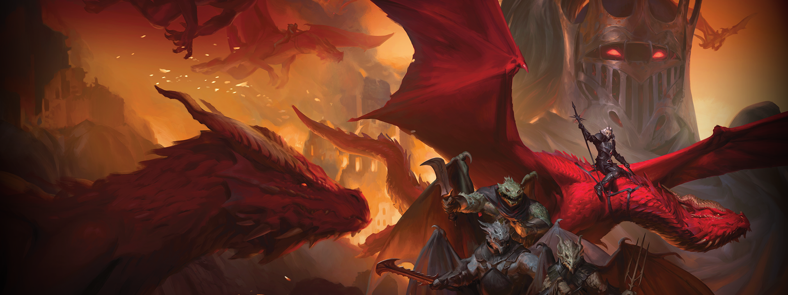

Y junto a ella su temido ejercito draconiano está generando revuelo en el mundo de Krynn.
Dragonlance: Shadow of the Dragon Queen es una aventura de conflicto y desafio que toma lugar durante las legendarias Guerras de las Lanzas.

Únete a los soldados de la ciudad de Kalaman, una de las ultimas en resistir pero cuidado con el temible Lord Soth y sus secuaces que harán todo lo posible por encontrar el arma para dominar el mundo.